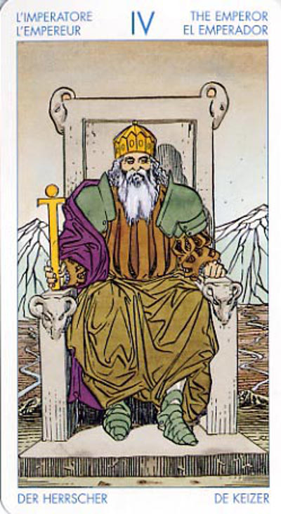

Император
Смысл карты: после безуспешной борьбы ты смирился с данностями окружающего мира и упорядочил, приспособил к ним свою жизнь. Теперь, кажется, все идет так, как ты задумал; но с некоторых пор тебя не покидает опасение, что все может пойти прахом. .
Поэтому ты пытаешься заглушить внутренний голос, подавить чувства и эмоции, чтобы сохранить верность идее. . Это ошибка: дай себе свободу, прислушайся к внутреннему голосу! Помни, что на свете есть дела и вещи, гораздо более значимые, чем ты и все твои наполеоновские планы. Но не отчаивайся: заблудший всегда может повернуть назад и выйти на правильную дорогу.
.
Он является архетипом Отца, или главы семейства, но также по своей Природе представляет собой Бога - поэтому от него исходит ощущение мужской силы, плодородия и мужества. .
.
Подобно Императрице, Император обладает как созидательным, так и разрушительными аспектами. .
.
Значение: На чисто обыденном уровне Хозяин может означать совет обратиться за помощью к “сильному” (отцу, начальнику и т.п.) или самому проявить силу. В редких случаях означает некую надчеловеческую силу, “небесного покровителя”, помощь свыше. .
.
Император обещает вам успех и реализацию планов, однако его могущество может сдерживаться другими факторами. В дополнение к его огромной воле, к его способности мыслить ясно и рационально, к его приверженности принципам, вы нуждаетесь в страстности и эмоциональности, представленных Императрицей. .
.
Вместе они могут стать покровителями вашего личностного развития или реализации ваших проектов. В то время, как Императрица дает движущую силу и подпитку, Император обеспечивает необходимые для достижения успеха структуру и защиту.
В зависимости от той позиции, которую Император занимает в раскладе, он может символизировать отца, работодателя или представителя власти.
.
.
В прямом положении карта император говорит о силе воли, означает логичность поступков, достижение цели, правильность выбранного пути. Может символизировать успехи (в делах общественных, на работе, дома), отцовство, а в некоторых случаях - безопасность, стабилизацию положения, легальные доходы. .
Карта может олицетворять людей зрелых, со стабильным положением в обществе, обладающих силой убеждения, возможностью влиять на людей. Означает авторитет, самоконтроль - "сильную личность", у которой рассудок явно преобладает над эмоциями. и страстями. .
.
Предложение взять ответственность на себя. Законность. Для мужчин (или о мужчине) - он хозяин в своем доме. Карьера. Также может означать бабника - ведь император всегда окружен фаворитками. Бизнесмену сулит успех и процветание, поддержку людей с положением. Для женщины - наличие покровителя сильного или богатого. При разрешении ситуации - она решится только при поддержке более значимого и
могущественного человека. При необходимости выбора - эта карта советует выбрать то,что сулит перспективу, что даст вам проявить себя. .
.
Что означает данная карта для гадающего? В зависимости от сопровождающих Младших Арканов вы можете истолковать ее как сильную личность, чей-то авторитет, влиятельное положение в обществе, неплохие доходы... .
.
Если Аркан «Император» выпадает в личном раскладе мужчины, он говорит о том, что этот чедовек - лидер в рабочем коллективе и глава в своей семье; в решающий момент такой мужчина без колебаний возьмет власть в свои руки. и уверенно доведет дело до конца. .
.
При появлении Аркана «Император» в личном раскладе женщины можно предположить, что у нее имеется какой-то сильный покровитель (возможно, пока еще неизвестный ей самой). В определенных случаях эта карта означает, что на женщину имеет очень сильное влияние мужчина старше ее по возрасту и положению. .
.
В перевернутом положении, наоборот, не советует применять силу. Если речь идет о “сильном” (влиятельном) человеке, то он не на вашей стороне. и будет скорее продиводействовать, чем помогать вам. То же относится и к надчеловеческой силе: “Космос” в данной ситуации против вас. .
.
В позиции прошлого перевернутый Хозяин может означать превышение требуемой меры силы, отчего эффект будет противоположным ожидаемому.
Для бизнесменов – совет не миндальничать с недобросовестными работниками, партнерами, любовницами, иначе погибнет дело. .
.
В перевернутом положении. эта карта может указывать на чрезмерно сурового и нетерпимого человека, который утратил связь с женскими качествами Императрицы. Существует выражение, которое очень хорошо описывает тип поведения или человека, на которого может указывать Император в перевернутом положении: "тирания слабого". Вероятно, каждый из нас сталкивался с "мелкими диктаторами" которые поступают несправедливо и проявляют себя тиранами, причем не потому, что они на самом деле могущественны, а потому что в глубине души ощущают собственную неполноценность. Потеря авторитета и власти, отсутствие ясности и прозрачности, борьба за власть, нерешительность, диктаторство, слабость, отсутствие самоуважения. .
.
В перевернутом положении карта император символизирует отрицание авторитетов, нежелание принимать участие в жизни других людей (что тоже иногда верно), невыполнение своих обязанностей - (в частности отцовских), игнорирование всего легального, упорядоченного, учтивого, неумение обуздывать свои недостатки и пороки..
.
Иногда - это явная зависимость от людей сильных, авторитетных. Такая позиция карты может сигнализировать также и о том, что в вашей жизни есть некто, кто подчинил вас себе полностью. У вас не хватает энергии даже для того, чтобы решать незначительные проблемы, и вы
неспособны контролировать самые пустячные эмоции. .
.
Эта позиция может предупреждать вас о неудачах на работе, о наличии сил, тормозящих развитие дел. В общем раскладе карта говорит и о том, что человеку необходимо проявить мудрость. .
.
Отрицательное значение карты: Отсутствие силы и решительности. Пустая трата сил - цели все равно не достичь. Наживание себе врагов. Ссоры, война. Жестокий самоуправец. .
.
При негативных Младших Арканах или при появлении карты «Император» в перевернутом виде вам стоит опасаться, что общение с этим человеком будет нелегким: он привык распоряжаться не только собой и своими делами, но и поступками других людей. Скорее всего, такой человек считает, что он лучше вас знает, как и для чего вам стоит жить (что он и постарается довести до вашего сведения при первом удобном случае). .
.
Тем, кто гадает на ситуацию, следует знать, что исход событий во многом зависит от какого-то влиятельного человека (по сопровождающим Младшим Арканам можно догадаться, о ком именно идет речь).
По карточному окружению следует опять же судить, будет ли этот человек покровительствовать вам в ваших начинаниях, или же намерен всячески «ставить палки в колеса».